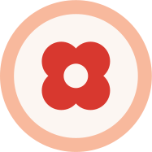
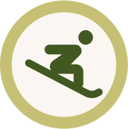

Komponenter
Gjenbrukbare UI-byggeklosser. Alle komponenter er implementert med FSKs design tokens og speiler mønstrene fra fsk.no.
Knapper
Alle knapper bruker border-radius: 9999px (pill-form). Primær CTA er grønn, sekundær er lysblå.
Varianter
Størrelser
Kode
<!-- Primær -->
<a href="#" class="btn">Meld deg inn i klubben</a>
<!-- Sekundær -->
<a href="#" class="btn btn--secondary">Se alle nyheter</a>
<!-- Outline -->
<a href="#" class="btn btn--outline">Bli kjent med FSK</a>
<!-- Liten -->
<a href="#" class="btn btn--sm btn--secondary">Søk</a>Kort
Nyhetskort-stil med avrundede hjørner (border-radius: 50px). Bakgrunn er off-white eller lys grønn.
Sesongåpning på Ski-arena
Bli med på årets første renn! Åpent for alle aldersgrupper og nivåer.
Les mer →Nye løyper åpner i Arenaen
FSK har preparert tre nye løyper for den kommende sesongen.
Les mer →Kode
<div class="card">
<img class="card__img" src="bilde.jpg" alt="">
<div class="card__body">
<span class="badge">Nyhet</span>
<h3>Tittel</h3>
<p>Beskrivelse</p>
<a href="#" class="btn btn--sm">Les mer</a>
</div>
</div>
<!-- Grønn variant -->
<div class="card card--green"> … </div>Badges & tags
Pill-form tags. Grønn er primær (artikler/nyheter), blå er sekundær (arrangementer).
Kode
<span class="badge">Artikkel</span>
<span class="badge badge--blue">Arrangement</span>
<span class="badge badge--red">Viktig</span>Skjemafelt
Inndata-felt med border-radius: 9999px (pill). Ramme er aksent blå, hover-tilstand bytter til lys blå.
Kode
<div class="field">
<label for="navn">Fullt navn</label>
<input type="text" id="navn" placeholder="Ola Nordmann">
</div>
<!-- Select med styling -->
<div class="field">
<label for="type">Aktivitetstype</label>
<div class="select-wrap">
<select id="type"> … </select>
</div>
</div>Ikoner
17 egendefinerte sirkulære ikoner fra FSK-prototypen. Hvert ikon er et SVG-bilde med FSKs merkevarefarger.

ikon-4.svg
ikon-6.svgIkonene finnes i assets/icons/. De 7 navngitte ikonene er identifisert fra SVG-innholdet. Gi gjerne de 10 resterende bedre navn etter bruksområde.